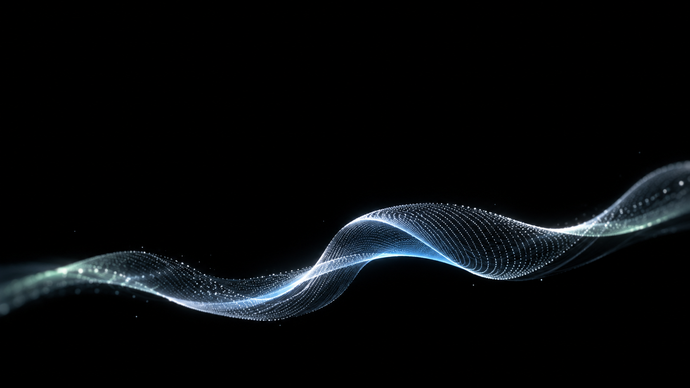

S01 · 00:00.00–00:13.51
微光起伏
能量百分位 3.9 · 质心 940 Hz · 起音 2.96/秒
全曲相对能量最低且频谱质心较低，选用少量、清晰、安静的结构；不据此判断情绪。
查看变化设想、衔接与提示词
运动设想：薄片轻微起伏，点沿弧面缓慢移动；开头静音时从黑场显现。
衔接：建立全曲共同的点阵薄片主体。
以上属于设计选择，静态图未验证运动或音画同步。
打开完整生图提示词{
"rms_dbfs_p10_p50_p90": [
-21.686,
-19.225,
-17.397
],
"energy_percentile_within_track": 3.9,
"energy_change_last_vs_first_third_db": -0.022,
"spectral_centroid_hz_median": 940.3,
"spectral_flatness_median": 4.9e-05,
"frequency_band_energy_ratios_mean": {
"20_250_hz": 0.24120000004768372,
"250_2000_hz": 0.7444000244140625,
"2000_8000_hz": 0.012000000104308128
},
"hpss_percussive_ratio_median": 0.0011,
"detected_onsets_per_second": 2.96,
"beat_interval_bpm_median": 136.0,
"beat_interval_coefficient_of_variation": 0.0413,
"chroma_mean": [
0.1606999933719635,
0.23880000412464142,
0.8637999892234802,
0.32280001044273376,
0.19009999930858612,
0.10220000147819519,
0.1071000024676323,
0.2915000021457672,
0.12129999697208405,
0.04390000179409981,
0.06129999831318855,
0.11309999972581863
]
}